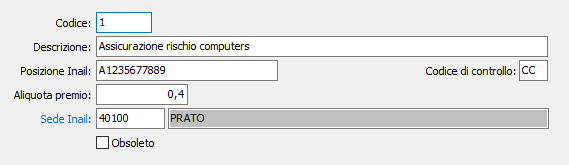

Posizioni Inail
La tabella prevede un elemento per ciascuna posizione INAIL aziendale. Ciascun elemento, il cui codice viene inserito nell’anagrafica percipienti ove necessario, definisce gli estremi della posizione, l’aliquota del premio e altre informazioni necessarie per la redazione dell’F24.

CODICE POSIZIONE: codice numerico per individuare la posizione attiva. Sul campo sono attive le funzioni di ricerca (F9) sulla tabella stessa.
DESCRIZIONE POSIZIONE ASSICURATIVA: campo alfanumerico di 50 caratteri per descrivere la posizione assicurativa.
POSIZIONE ASSICURATIVA: campo alfanumerico di 10 caratteri per inserire il numero di posizione assicurativa
CODICE DI CONTROLLO: campo alfanumerico di 2 caratteri per inserire il codice di controllo del numero di posizione assicurativa
ALIQUOTA PREMIO: campo numerico per indicare la percentuale del premio relativo alla posizione in esame.
CODICE SEDE INAIL: campo alfanumerico di 5 caratteri per indicare il codice della sede INAIL presso cui è accesa la posizione in esame. Sul campo sono attive le funzioni di ricerca (F9) sulla tabella stessa.